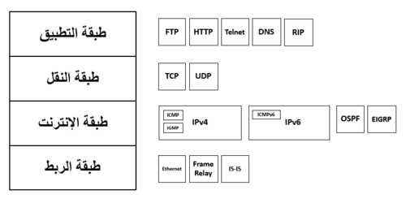
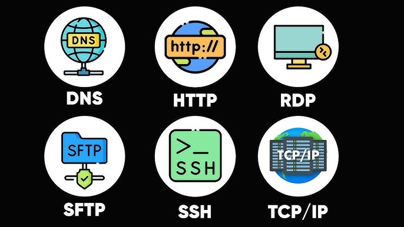
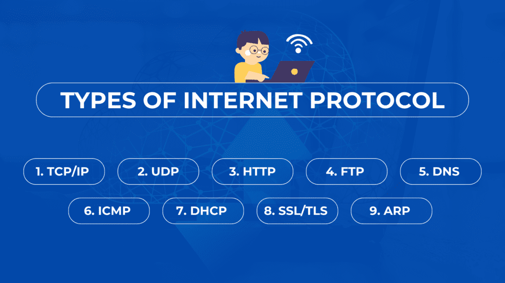

بروتوكولات الشبكات
ما هي بروتوكولات الشبكات؟
بروتوكولات الشبكات (Network Protocols) هي مجموعة من القواعد والمعايير التي تحكم عملية الاتصال وتبادل البيانات بين الأجهزة في الشبكة. تعمل هذه البروتوكولات كلغة مشتركة تسمح للأجهزة المختلفة بالتواصل وفهم بعضها البعض، بغض النظر عن نوع الجهاز أو نظام التشغيل.
تحدد البروتوكولات كيفية تنسيق البيانات وإرسالها واستقبالها والتحقق منها، وكذلك كيفية التعامل مع الأخطاء التي قد تحدث أثناء عملية الاتصال.

أهمية بروتوكولات الشبكات
تلعب بروتوكولات الشبكات دورًا حيويًا في عمل الشبكات والإنترنت، وتتجلى أهميتها في النقاط التالية:
- التوافقية: تضمن إمكانية تواصل الأجهزة المختلفة مع بعضها البعض.
- التنظيم: تنظم عملية تبادل البيانات وتمنع التصادم والفوضى.
- الموثوقية: تضمن وصول البيانات بشكل صحيح وكامل.
- الأمان: توفر آليات لحماية البيانات أثناء نقلها.
- الكفاءة: تحسن استخدام موارد الشبكة وتقلل من الازدحام.
تصنيف بروتوكولات الشبكات
يمكن تصنيف بروتوكولات الشبكات بعدة طرق، منها:
1. حسب الوظيفة
- بروتوكولات الاتصال (Communication Protocols): تحدد كيفية إنشاء الاتصال والحفاظ عليه وإنهائه.
- بروتوكولات التوجيه (Routing Protocols): تحدد كيفية توجيه البيانات عبر الشبكة.
- بروتوكولات الأمان (Security Protocols): توفر آليات لتشفير البيانات والتحقق من الهوية.
- بروتوكولات إدارة الشبكة (Network Management Protocols): تستخدم لمراقبة وإدارة أجهزة الشبكة.
2. حسب طبقة الشبكة
يمكن تصنيف البروتوكولات حسب طبقة الشبكة التي تعمل فيها وفقًا لنموذج OSI أو نموذج TCP/IP:
-

- بروتوكولات طبقة التطبيق (Application Layer): مثل HTTP و FTP و SMTP.
- بروتوكولات طبقة النقل (Transport Layer): مثل TCP و UDP.
- بروتوكولات طبقة الشبكة (Network Layer): مثل IP و ICMP.
- بروتوكولات طبقة الوصلة (Data Link Layer): مثل Ethernet و PPP.
أهم بروتوكولات الشبكات
فيما يلي شرح لأهم بروتوكولات الشبكات المستخدمة حاليًا:
1. بروتوكول TCP/IP (Transmission Control Protocol/Internet Protocol)
يعتبر TCP/IP مجموعة من البروتوكولات التي تشكل الأساس لشبكة الإنترنت. يتكون من بروتوكولين رئيسيين:
بروتوكول TCP (Transmission Control Protocol)
يعمل في طبقة النقل ويوفر اتصالًا موثوقًا وموجهًا للاتصال بين الأجهزة. يقوم بتقسيم البيانات إلى حزم، وإرسالها، والتأكد من وصولها بشكل صحيح، وإعادة ترتيبها عند الاستقبال.
بروتوكول IP (Internet Protocol)
يعمل في طبقة الشبكة ويوفر آلية لتوجيه الحزم عبر الشبكة. يقوم بتعيين عناوين IP للأجهزة وتحديد المسار الأفضل لنقل البيانات.
تستخدم مجموعة TCP/IP أيضًا بروتوكولات أخرى مثل:
- UDP (User Datagram Protocol): بروتوكول نقل غير موثوق وغير موجه للاتصال، ولكنه أسرع من TCP.
- ICMP (Internet Control Message Protocol): يستخدم لإرسال رسائل التحكم والخطأ.
- ARP (Address Resolution Protocol): يستخدم لترجمة عناوين IP إلى عناوين MAC.
2. بروتوكول HTTP/HTTPS (Hypertext Transfer Protocol)
يعمل في طبقة التطبيق ويستخدم لنقل صفحات الويب والوسائط المتعددة عبر الإنترنت.
- HTTP: البروتوكول الأساسي لنقل صفحات الويب.
- HTTPS: نسخة آمنة من HTTP تستخدم التشفير لحماية البيانات.
3. بروتوكول FTP (File Transfer Protocol)
يعمل في طبقة التطبيق ويستخدم لنقل الملفات بين الأجهزة عبر الشبكة. يوفر آليات للتحكم في الوصول والتحقق من الهوية.
4. بروتوكول SMTP (Simple Mail Transfer Protocol)
يعمل في طبقة التطبيق ويستخدم لإرسال رسائل البريد الإلكتروني. يعمل جنبًا إلى جنب مع بروتوكولات أخرى مثل POP3 و IMAP لاستقبال البريد الإلكتروني.
5. بروتوكول DNS (Domain Name System)
يعمل في طبقة التطبيق ويستخدم لترجمة أسماء النطاقات (مثل www.example.com) إلى عناوين IP. يعتبر من أهم البروتوكولات التي تسهل استخدام الإنترنت.
6. بروتوكول DHCP (Dynamic Host Configuration Protocol)
يعمل في طبقة التطبيق ويستخدم لتعيين عناوين IP وإعدادات الشبكة الأخرى للأجهزة بشكل تلقائي.
7. بروتوكول SSH (Secure Shell)
يعمل في طبقة التطبيق ويوفر اتصالًا آمنًا للوصول إلى الأجهزة البعيدة والتحكم فيها.
8. بروتوكول Telnet
يعمل في طبقة التطبيق ويستخدم للوصول إلى الأجهزة البعيدة والتحكم فيها، ولكنه غير آمن لأنه لا يستخدم التشفير.
9. بروتوكول SNMP (Simple Network Management Protocol)
يعمل في طبقة التطبيق ويستخدم لمراقبة وإدارة أجهزة الشبكة مثل الراوترات والسويتشات.
10. بروتوكول Ethernet
يعمل في طبقة الوصلة ويحدد كيفية تنسيق البيانات وإرسالها عبر الشبكات المحلية السلكية.
11. بروتوكول Wi-Fi (IEEE 802.11)
يعمل في طبقة الوصلة ويحدد كيفية تنسيق البيانات وإرسالها عبر الشبكات المحلية اللاسلكية.
12. بروتوكول Bluetooth
يستخدم للاتصال قصير المدى بين الأجهزة، ويعمل في طبقة الوصلة.
كيفية عمل البروتوكولات معًا
تعمل بروتوكولات الشبكات معًا في تناغم لتوفير خدمات الاتصال. على سبيل المثال، عندما تزور موقع ويب:
- يستخدم بروتوكول DNS لترجمة اسم الموقع إلى عنوان IP.
- يستخدم بروتوكول TCP لإنشاء اتصال موثوق مع الخادم.
- يستخدم بروتوكول IP لتوجيه البيانات عبر الشبكة.
- يستخدم بروتوكول HTTP لطلب صفحة الويب واستلامها.
- تستخدم بروتوكولات الطبقة السفلية مثل Ethernet أو Wi-Fi لنقل البيانات فعليًا.
تطور بروتوكولات الشبكات
تتطور بروتوكولات الشبكات باستمرار لتلبية الاحتياجات المتزايدة للاتصالات الحديثة:
- IPv6: تم تطويره ليحل محل IPv4 ويوفر عددًا أكبر من عناوين IP.
- HTTP/2 و HTTP/3: إصدارات محسنة من HTTP توفر أداءً أفضل وكفاءة أعلى.
- TLS (Transport Layer Security): بروتوكول تشفير متطور يستخدم في HTTPS.
- 5G: الجيل الخامس من بروتوكولات الاتصالات اللاسلكية للهواتف المحمولة.
تحديات وقضايا بروتوكولات الشبكات
تواجه بروتوكولات الشبكات عدة تحديات وقضايا:
- الأمان: العديد من البروتوكولات القديمة لم تصمم مع وضع الأمان في الاعتبار.
- قابلية التوسع: بعض البروتوكولات تواجه صعوبات في التعامل مع الحجم المتزايد للإنترنت.
- التوافقية: ضمان توافق الإصدارات الجديدة مع الإصدارات القديمة.
- الأداء: تحسين الأداء مع الحفاظ على الموثوقية والأمان.
خلاصة
تعتبر بروتوكولات الشبكات العمود الفقري للاتصالات الحديثة، فهي تمكن الأجهزة المختلفة من التواصل وتبادل البيانات بشكل موثوق وآمن. فهم هذه البروتوكولات وكيفية عملها معًا يعد أمرًا أساسيًا لأي شخص يعمل في مجال تكنولوجيا المعلومات والشبكات.
مع استمرار تطور التكنولوجيا، ستستمر بروتوكولات الشبكات في التطور أيضًا لتلبية الاحتياجات المتزايدة للاتصالات الرقمية وإنترنت الأشياء والتقنيات الناشئة الأخرى.